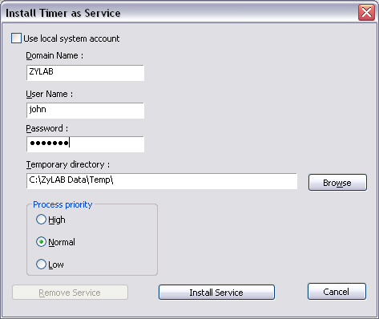

Scheduled indexing (service)
Conditions
ZyINDEX is open.
Instructions
- Select the TIMER icon:
 .
.
- Add schedules to the list. See Scheduled indexing (manual) (page 101) and Scheduled indexing (automatic) (page 103).
- Go to Timer > Service.

- Fill out the Domain Name.
- Fill out the User Name.
- Fill out a Password.
- Browse for the Temporary directory.
- Set the Process priority.
- Define the Number of seconds before assuming indexing thread in 'hung' state.
This option will stop and start the TIMER service if TIMER started to index a document opened by INSO and INSO does not give a reaction anymore. After the restart the document is stored in the exclude list.
- Define the Number of seconds to allow the service to finish.
This is the amount of seconds the service is allowed to use for finishing indexing after stopping of the services.
- Click OK.
Result
The Service will be added to the list of available NT services and is started immediately. It will also run when the system is logged off.
Verify
- Go to Start > Settings > Control Panel > Services (Windows NT)
or
Go to Start > Settings > Control Panels > Administrative tools > Services (Windows 2000)
- Verify that TIMERservice has started.
- If not, make sure that the user (used to run this service), has been granted access to run NT services.